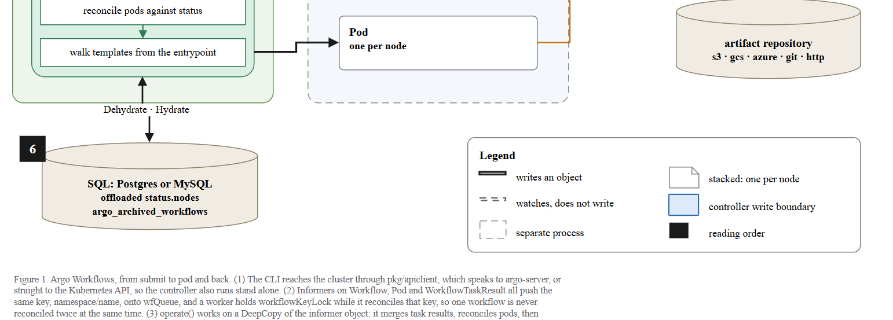
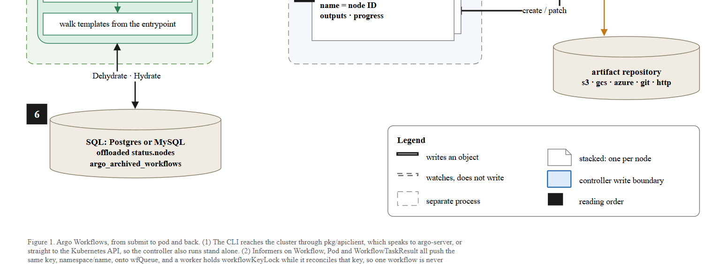
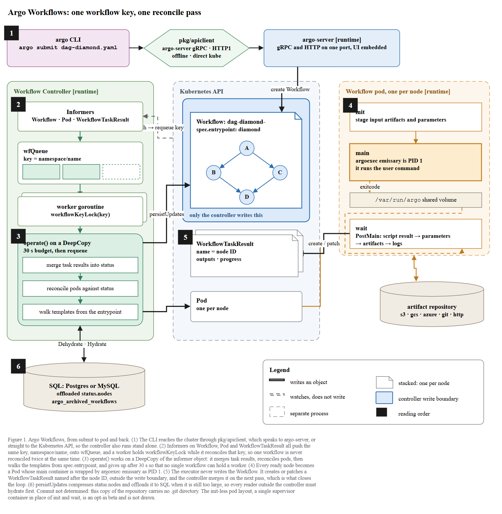
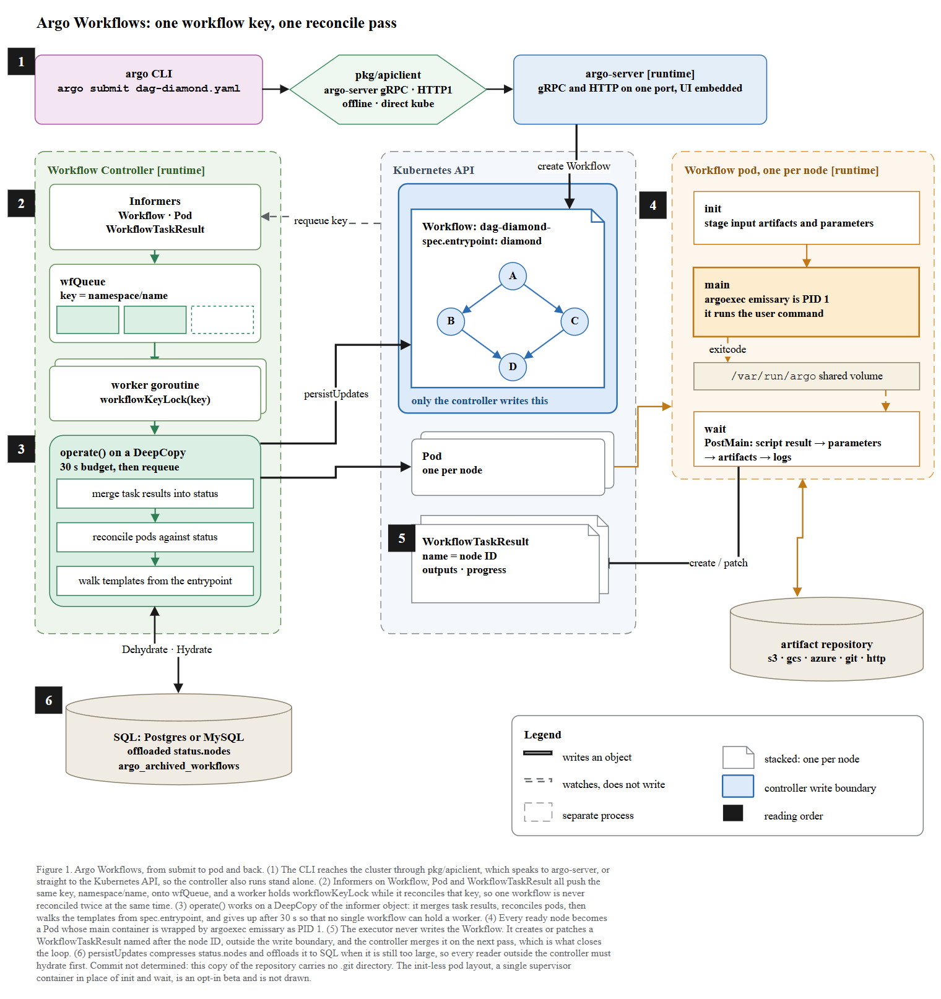
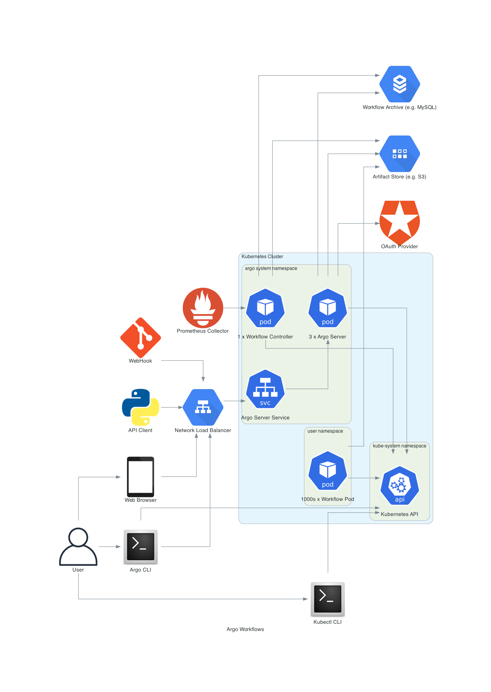

← 전체 목록 · T2-3 · T2
Argo Workflows — 한 키, 한 번의 리컨사일
스킬 개발에 사용하지 않은 저장소이다. 저장소 코드만 입력으로 사용하였고, 정답지는 실행 종료 후 대조 목적으로만 열었다.
블라인드 조건
- 정답지는 프로젝트 자신의 아키텍처 다이어그램이다.
docs/architecture.md에 포함된assets/diagram.png·assets/overview.jpeg등 4장이며, 저장소 내부에 있다. - 프롬프트는 저자의 아키텍처 그림을 웹에서 찾지 말고 저장소가 그릴 것을 정하도록 지시하였다. 리포트:
I read the prose of
docs/architecture.md,AGENTS.md,workflow/controller/AGENTS.md… and the code, and left the four image files unopened. - 그래서 나온 그림은 정답지와 관점이 다르다. 정답지는 네임스페이스와 Pod 개수 중심의 배포 토폴로지이고, 산출물은 제출→리컨사일→Pod→TaskResult 의 실행 흐름이다. 저자 그림을 복제한 것이었다면 이렇게 달라지지 않는다.
- 커밋도 제공하지 않았다. 대상 폴더에
argo\.git이 없어rev-parse --show-toplevel이 argo 가 아니라paper-trail을 가리켰고, 틀린 SHA 대신 캡션에Commit not determined를 기록하였다.
프롬프트
Scout 신규 세션에 아래 내용만 입력하였다. 무엇을 그릴지는 지정하지 않았다.
/method-figure
C:\Users\youngseolee\OneDrive - Microsoft\Desktop\work\code\paper-trail\eval\demo\sandbox\argo
이 저장소를 읽고 이 프로젝트가 어떻게 동작하는지 보여주는 아키텍처 그림을
만들어줘.
지켜야 할 것:
- 이 저장소의 코드와 문서에서만 읽는다. 이 프로젝트의 공식 문서 사이트나
저자가 그린 아키텍처 그림을 웹에서 찾아보지 않는다. 무엇을 그릴지는
저장소가 정한다.
- 산출물은 전부 이 폴더에 쓴다:
C:\Users\youngseolee\OneDrive - Microsoft\Desktop\work\code\paper-trail\out\demo\argo\run\
figure.drawio, fig.html, report.md,
evidence.json (evidence.py 가 뽑은 재료 원문),
render.png (최종 그림을 렌더한 PNG),
render-r1.png (독립 시각 게이트를 처음 통과시키기 전 시점의 렌더).
게이트가 한 번에 통과하면 render-r1.png 는 만들지 않아도 된다.
- report.md 에는 돌린 검사의 stdout 을 그대로 붙이고, 게이트마다 통과/실패와
몇 라운드 만에 통과했는지 적는다. 스킬에서 모호했거나 따를 수 없었던 것도
적는다.
실행 경과
캡처 프레임 109장 중 9장을 선별하였다. 좌우 방향키로 이동한다.
게이트 4종 결과
| 게이트 | 결과 | 라운드 | 검출 내용 |
|---|---|---|---|
| ① XML 파싱 / 렌더 | 통과 | 1 | draw.io XML 파싱 + 뷰어 기동 (전용 포트 8901) |
② check_layout.py --max 6 | ok (엣지 22, 라벨 6) | 3 | 1라운드 flag 10건: 컨테이너·라벨 넘침, 존 경계 침범, 화살표 없는 셀(배지·큐칸), 화살표 위 그림. 2라운드 Informers 카드 넘침 1건 |
③ check_render.js | flags: [] | 2 | 1라운드 onborder 8건 + cross 2건: 라벨이 상자 경계에 걸치고 화살표 두 쌍이 교차 |
| ③-b 육안 자기점검 | 결함 2건 발견 | 1 | 범례는 '점선 = 별도 프로세스'인데 컨트롤러 존만 실선; Pod 이 노드당 하나인데 스택으로 안 그려짐. 둘 다 수정 |
| ④ 독립 시각 게이트 | GATE: PASS | 1 | 첫 응답이 근거 없는 all-PASS 여서 반려하고 좌표·인용을 요구하였다. 재응답에서 항목별 근거와 함께 통과 |
심사자에게는 렌더 PNG 와 검사 원문만 제공하고 보고서·의도·단계 분해는 제공하지 않는다. 자체 점검 항목을 44개까지 확대해도 통과율이 개선되지 않아, 점검 항목이 아니라 판정 주체를 분리하는 방식으로 변경하였다.
게이트 ③ 와 육안 점검이 바꾼 것
게이트 ④ 는 1라운드에 통과하였다. 근거 없는 all-PASS 응답을 반려했을 뿐, 그림 자체는 게이트 ④ 때문에 바뀌지 않았다. 눈에 보이는 before/after 는 render-r1.png(기계 렌더 게이트 ③ 통과 이전)과 최종 render.png 사이의 차이이다. 여기에는 게이트 ③ 의 통로 재배치와, 그 뒤 육안 자체 점검이 검출한 두 결함(범례와 어긋난 실선 존, 스택 처리되지 않은 Pod)이 함께 들어 있다.




최종 산출물
산출물은 이미지가 아니라 draw.io XML 이다. 확대·이동이 가능하며 내려받아 수정할 수 있다.
figure.drawio · report.md · 뷰어 새 창
정답지 대조

docs/architecture.md + assets/ 다이어그램) Argo Workflows 아키텍처 다이어그램 (배포 토폴로지)| 항목 | 정답지 | 산출물 | 비고 |
|---|---|---|---|
| 전체 관점 | 배포 토폴로지: 네임스페이스·Pod 개수·외부 스토어 | 실행 흐름: 제출 → 리컨사일 → Pod → TaskResult → 되돌아옴 | 같은 시스템을 배치 대신 리컨사일 루프로 표현하였다. |
| 클라이언트 | User · Argo CLI · Kubectl · API Client · Web Browser · WebHook · Prometheus → LB | argo submit 하나 → pkg/apiclient (gRPC · HTTP1 · offline · direct kube) | 정답지는 접속 주체를 나열하고, 산출물은 제출 경로 하나와 apiclient 4경로를 그렸다. |
| argo-server | 3 x Argo Server Pod + Argo Server Service | argo-server [runtime], gRPC and HTTP on one port, UI embedded | 복제 수 대신 포트·UI 정보를 담았다. |
| 컨트롤러 | 1 x Workflow Controller 상자 하나 | informers → wfQueue → workflowKeyLock → operate() 3동작 | 정답지는 닫힌 상자로 두고, 산출물은 루프 내부를 드러냈다. |
| 단일 기록자 불변식 | 없음 | 파란 띠 only the controller writes this+ WorkflowTaskResult 를 띠 밖에 | 리컨사일 루프의 핵심 주장이며, 정답지에는 없다. |
| Workflow Pod | 1000s x Workflow Pod 아이콘 하나 | init/main/wait 세 컨테이너, argoexec emissary 가 PID 1 | 정답지는 개수를, 산출물은 컨테이너 구조를 나타냈다. |
| 루프를 닫는 간선 | 없음 (패널이 그냥 나란함) | WorkflowTaskResult → create / patch → 다음 패스에 병합 | 루프를 닫는 간선이며, 정답지에는 없다. |
| 인증 / OAuth | OAuth Provider 있음 | 안 그림 | 인증은 실행 흐름 밖이므로 정답지에는 있고 산출물에는 없다. |